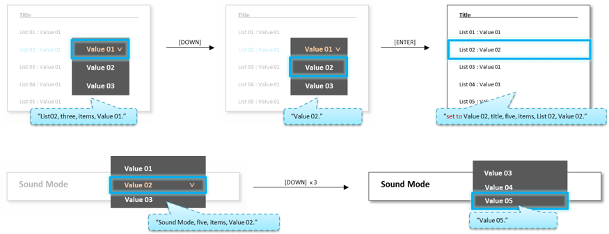

Accessibility
- Definition
-
Accessibility includes Voice Guide, Enlarge and High Contrast.
Basically, accessibility features need to be applied in overall TV functions excluding some 3rd party apps. And there is an additional access point for accessibility. If the volume key is long-pressed at smart control, the shortcut menu for accessibility is displayed. (**Refer to Accessibility Shortcuts document for details.) - Voice Guide
-
Voice Guide provides verbal feedback about the selected items. Voice Guide has setting options like Voice Guide On/Off, Volume, Speed and Pitch (Excluding Description Level).
- Basic Rule
-
- When voice guide is turned on,
-
- - timeout for each UI becomes 3 time longer.
e.g. original: 10 sec voice guide on: 30 sec - - AUI level is automatically set as high.
- - Sound feedback is provided when turns on/off the TV power.
- - timeout for each UI becomes 3 time longer.
- Initial Setup
-
- - The shortcut menu for Accessibility works on Initial Setup step.
- - So if voice guide is turned on, voice guide is supported on Initial Setup step.
- User Application
-
- - Exceptionally, some applications(e.g. 3rd Party App, Web Browser..) can follow the voice guide rule on their own.
- Basic TTS Rule
-
- (When user key input) Voice Guide(TTS) is produced after AUI(Beep) sound.
- Basically, Read all the words in brackets.
- Key input before end of Voice Guide(TTS)
-
- - Voice Guide(TTS) is stopped immediately and the AUI(Beep) and Voice Guide(TTS) by the last key input is produced.
- - AUI(Beep) and Voice Guide(TTS) by the last key input should be a particular priority.
- Continuous key inputs
-
- - Related AUI(Beep) sound for continuous key input is produced while a user make continuous key inputs.
- - And then Voice Guide(TTS) for the last screen(item) is produced.
- Reading Order
-
- - Read sequentially from 1 (No.1 → No.2 → No.3……No.n)
- - Available items for each cases are guided, missing information is skipped even if it has prior order
- Even if the feature/function does not have the title on screen, when first entered to the feature/function, the “title” is guided.
-
- If the title has a category meaning, the “category” can be guided.
-
- Even if the source screen does not have the UI or title, when first entered to the source screen, the “title” is guided.
-
- - “title” = “Source Name” = <<SOURCE_VALUE>>, <<DEVICE_TYPE>>, <<BRAND/PROVIDER>>.
- - Voice Guide for Source Name: **Refer to Source document for details.
- Number
-
- - Basically, cardinal number is recommended for overall cases considering the translation issues.
- Abbreviation
-
- - Basically, read to full-string.
* Exceptional case: Read the abbreviation of time as it stands. (AM, PM)
- - Basically, read to full-string.
- Date
-
- - In case of ‘Date’, ordinal number for ‘Day’ and distinguished name of twelve months is used.
- - Day & Month : Terms (SID)
Korean: “<<A>>월 <<B>>일”
Other Language: “<<A>> <<B>>” - - Year : Terms (SID)
Korean: “<<A>>년”
Other Language: “<<A>>”
- Time
-
- - Terms (SID)
Korean: “<<A>>시 <<B>>분”
Other Language: “<<A>>:<<B>>”
- - Terms (SID)
- Not supported
-
- - If voice guide is not supported when focused item is selected, say “Voice guide is not supported for this function.” before selecting the item.
- - After the item is selected, say “Voice guide is not supported for this function. Press Return on your remote to go back to the previous screen.”
- Not supported (for 3rd party App/Game)
-
- - Most of the current 3rd party App/Game do not support the voice guide.
- - If each app/game is unable to support the voice guide, say “Voice Guide is not available for all apps.” when first enter the list (e.g. Home, Apps and so on).
- Basic Navigation and Selection
-
- If first entered to a menu, describe the UI(Title/Message..) if needed, then guide the number of list(menu) items and the focused item, value.
- If focus is moved within this level, guide mainly about the information which has changed, such as current focused item, value.
- Page/List/Menu context
-
- - First entered: a) page/list/menu title (if available) → b) number of list/menu items → c) name of focused item → d) value of focused item (if available) → e) status of focused item (if disabled)
- - Moved focus: a) name of focused item → b) value of focused item (if available) → c) status of focused item (if disabled)
- Dropdown & Option list(such as values, context menu) context
-
- - First entered: a) Sub menu/list title (if available) → b) number of list items → c) name/value of focused item → d) status of focused item (if disabled)
- - Moved focus: a) name/value of focused item → b) status of focused item (if disabled)
- Popup context
-
- - First entered: a) popup title → b) message(body text) of popup → c) name of focused button → d) status of focused button (if disabled)
- - Moved focus: a) name of focused button → b) status of focused button (if disabled)
- Watching context : Banner OSD
-
- - Volume : Provide current figure status
- . First entered: a) volume → b) current figure
- . Volume up/down: a) current figure
- - Channel : Provide all information of the current channel
- . First entered: a) channel → b) CH number → c) service name → d) program name → e) start-end time (if available) → f) audio description (if available)
- . Channel up/down: a) CH number → b) service name → c) program name → d) start-end time (if available) → e) audio description (if available)
- - Volume : Provide current figure status
- Guideline for template
-
-
Template for each cases:
Read each items, following the number #1~#n. -
- - Skip items if null. (e.g. if not “audio description”, don’t read it and skip)
-
Add “,” between each items, and “.” after the last item.
“item(s)” is used by the difference between the singular and plural number of <<NUMBER_ALL_ITEMS>>. -
- - <<NUMBER_ALL_ITEMS>>, item(s) : “one, item” / “two, items” / “three, items”
-
Template for each cases:
- Usage
-
- Banner | Channel Banner
-
- - first entered: Channel, <<CHANNEL_NUMBER>>, <<CHANNEL_NAME>>, <<PROGRAM_NAME>>, <<START_TIME>> to <<END_TIME>>, <<AUDIO_DESCRIPTION>>.
- - Channel up/down: <<CHANNEL_NUMBER>>, <<CHANNEL_NAME>>, <<PROGRAM_NAME>>, <<START_TIME>> to <<END_TIME>>, <<AUDIO_DESCRIPTION>>.
- Banner | Volume Banner
-
- - First entered: Volume, <<VOL_VALUE>>.
- - Volume up/down: <<VOL_VALUE>>.
- - Mute on: Mute.
- Checkbox
-
- - Checkbox focused: checkbox, <<CURRENT_VALUE>>, <<MESSAGE>>.
- - Check/uncheck: <<CURRENT_VALUE>>.
- Checkbox | Multi selection list
-
- - First entered: <<TITLE>>, << NUMBER_ALL_ITEMS >>, item(s), checkbox, <<CURRENT_VALUE>>, <<ITME_NAME>>.
- - Moved focus: checkbox, <<CURRENT_VALU¬¬E>>, <<ITME_NAME>>.
- Dropdown
-
- - First entered: <<TITLE>>, <<NUMBER_ALL_ITEMS>>, item(s), <<CURRENT_VALUE>>.
- - Moved focus: <<CURRENT_VALUE>>.
- - Value changed: set to <<CURRENT_VALUE>>.
- Input | Input Field & IME
-
- - First entered: <<TITLE>>, <<MESSAGE>>, Text box, <<EDIT_BOX_VALUE>>.
- - Launch IME: On-screen keyboard, <<ITEM_NAME>>
- - Moved focus: <<BUTTON_NAME>>, button.
- - Disabled: <<BUTTON_NAME>>, button, disabled.
- Input | PIN
-
- - First entered: <<ALL_MESSAGES>>.
- - Value entered, password: star.
- - Finished (succeeded): PIN accepted.
- - Finished (failed): <<ERROR_MESSAGE_ONLY>>
- List & Grid
-
- - First entered: <<TITLE>>, <<NUMBER_ALL_ITEMS>>, item(s), <<ITEM_NAME>>, <<CURRENT_VALUE>>.
- - Moved focus: <<ITEM_NAME>>, <<CURRENT_VALUE>>.
- - Disabled: <<ITEM_NAME>>, <<CURRENT_VALUE>>, disabled.
- List | Page scrolled
-
- - First entered: <<TITLE>>, Page <<NUMBER_CURRENT_PAGE>> of <<NUMBER_ALL_PAGES>>, <<NUMBER_ALL_ITEMS>>, item(s), <<ITEM_NAME>>, <<CURRENT_VALUE>>.
- - Moved focus: <<ITEM_NAME>>, <<CURRENT_VALUE>>.
- - Disabled: <<ITEM_NAME>>, <<CURRENT_VALUE>>, disabled.
- List | No title
-
- - First entered: <<OPTIONAL_TITLE>> list, <<NUMBER_ALL_ITEMS>>, item(s), <<OPTIONAL_ITEM_NAME>>.
- - Moved focus: <<OPTIONAL_ITEM_NAME>>.
- - Disabled: <<OPTIONAL_ITEM_NAME>>, disabled.
- * <<OPTIONAL_TITLE>> / <<OPTIONAL_ITEM_NAME>>
- - Even if the list does not have the title on screen, when first entered to the list, the “optional title” should be guided.
- - Even if the item does not have the name on screen, when focused to the item, the “optional name” should be guided.
- List | Empty list
-
- - First entered: <<TITLE>>, <<NO_ITMES_MESSAGE>>, <<RETURN_GUIDE>>.
- - The message for empty list on the screen precedes default statement.
- . The page does not have a message for empty list: << TITLE >>, no items, <<RETURN_GUIDE>>.
- . The page does not have a message for return guide: << TITLE >>, <<NO_ITMES_MESSAGE>>, Press Return on your remote to go back to the previous screen.
- List | Contextual Menu
-
- - First entered: <<TITLE>>, <<NUMBER_ALL_ITEMS>>, item(s), <<ITEM_NAME>>.
- - Moved focus: <<ITEM_NAME>>.
- - Disabled: <<ITEM_NAME>>, disabled.
- List | Dropdown List
-
- - First entered:<<TITLE>>,<<NUMBER_ALL_ITEMS>>, item(s),<<CURRENT_VALUE>>.
- - Moved focus:<<CURRENT_VALUE>>.
- - Value changed: set to<<CURRENT_VALUE>>.
- 
- Notification
-
- - First entered: Notification, <<TITLE>>, <<MESSAGE>>, <<BUTTON_NAME>>, button.
- - Moved focus: <<BUTTON_NAME>>, button.
- Popup
-
- - First entered: <<TITLE>>, <<MESSAGE>>, <<BUTTON_NAME>>, button.
- - Moved focus: <<BUTTON_NAME>>, button.
- - Disabled: <<BUTTON_NAME>>, button, disabled.
- Progress Indicator | Loading
-
- - First entered: loading, please wait.
- Progress Indicator | Progress Bar (Percentage)
-
- - First entered: <<TITLE>>, <<MESSAGE>>, please wait, <<BUTTON_NAME>>, button.
- - Every five seconds: <<MESSAGE>>, <<CURRENT_VALUE>>, percent, please wait, <<BUTTON_NAME>>, button.
- - Finished progress (OK button): <<MESSAGE>>, <<CURRENT_VALUE>>, percent, <<BUTTON_NAME>>, button.
- - Finished progress (back to previous screen): <<MESSAGE>>, complete, <<voice guide of previous screen>>.
- Progress Indicator | Progress Bar (Count)
-
- - First entered: <<TITLE>>, <<MESSAGE>>, please wait, <<BUTTON_NAME>>, button.
- - Every five seconds: <<MESSAGE>>, <<NUMBER_CURRENT_ITEM>> of <<NUMBER_ALL_ITEM>>, please wait, <<BUTTON_NAME>>, button.
- - Finished progress: <<MESSAGE>>, <<NUMBER_CURRENT_ITEM>> of <<NUMBER_ALL_ITEM>>, <<BUTTON_NAME>>, button.
- ** When both Percentage and Count displayed, read only Count.
- Slider
-
- - First entered: <<TITLE>>, <<RANGE_START>> to <<RANGE_END>>, <<CURRENT_VALUE>>.
- - Moved focus: <<CURRENT_VALUE>>.
- - Value changed: set to <<CURRENT_VALUE>>.
- Slider | Tint
-
- - First focused: <<TITLE>>, Green <<CURRENT_VALUE>>, Red <<CURRENT_VALUE>>.
- - Moved focus (G<<#>>/R<<#>>): Green <<CURRENT_VALUE>>, Red <<CURRENT_VALUE>>.
- - Value changed: set to Green <<CURRENT_VALUE>>, Red <<CURRENT_VALUE>>.
- Slider | Equalizer
-
- - First entered: <<TITLE>>, <<NUMBER_ALL_ITEMS>>, item(s), <<ITEM_NAME>>, <<CURRENT_VALUE>>.
- - Moved focus (-/+): plus <<CURRENT_VALUE>> / minus <<CURRENT_VALUE>> / zero
- - Moved focus (L/R): right <<CURRENT_VALUE>> / left <<CURRENT_VALUE>> / center
- - Disabled: <<ITEM_NAME>>, disabled.
- Slider | Playback Slider
-
- - First entered: <<FILE_NAME>>, <<BUTTON_NAME>>, button.
- - Controller focused: control bar, <<CURRENT_HOUR>> hour(s), <<CURRENT_MINUTE>> minute(s), <<CURRENT_SECOND>> second(s), of, <<TOTAL_HOUR>> hour(s), <<TOTAL_MINUTE>> minute(s), <<TOTAL_SECOND>> second(s).
- - Moved Left/right : <<CURRENT_HOUR>> hour(s), <<CURRENT_MINUTE>> minute(s), <<CURRENT_SECOND>> second(s).
- Spin Control
-
- - First entered: <<TITLE>>, <<NUMBER_ALL_ITEMS>>, item(s), <<CURRENT_VALUE>>.
- - Moved focus: <<CURRENT_VALUE>>.
- - Value changed: set to <<CURRENT_VALUE>>.
- Enlarge
-
- Enlarge enables users to see the elements on the screen with a larger, or zoomed-in, effect.
This is the key idea of Enlarge. -
- - Basically, the recommended Enlarge size is 1.2 ~ 1.5 times bigger than original size.
- - Enlarge is only applied to those items that can have focus on it; such as Image Item, Button, Checkbox (including text legend), etc.
- - In a Enlarge mode, do not support ‘sliding text’ feature. Even if the item is focused, keep the ellipsis(…) mark continuously.
**refer to GUI Guideline for more detail information.
- Enlarge enables users to see the elements on the screen with a larger, or zoomed-in, effect.
- High Contrast
-
- High Contrast mode configures the TV to display all menus with an opaque black background and a white or yellow font
This is the key idea of High Contrast. . -
- - Background color is Black & Foreground Color is White.
- - Background color is White & Foreground Color is Black.
- - In a High Contrast mode, do not support ‘sliding text’ feature. Even if the item is focused, keep the ellipsis(…) mark continuously.
**refer to GUI Guideline for more detail information.
- High Contrast mode configures the TV to display all menus with an opaque black background and a white or yellow font

- *Tags :
- Checkbox, Dropdown, Button, Input Field, 1-line PIN Field, 2-line PIN Field, Loading, Progress Bar, Slider, Spin Control, Grid, List, Notification, Popup